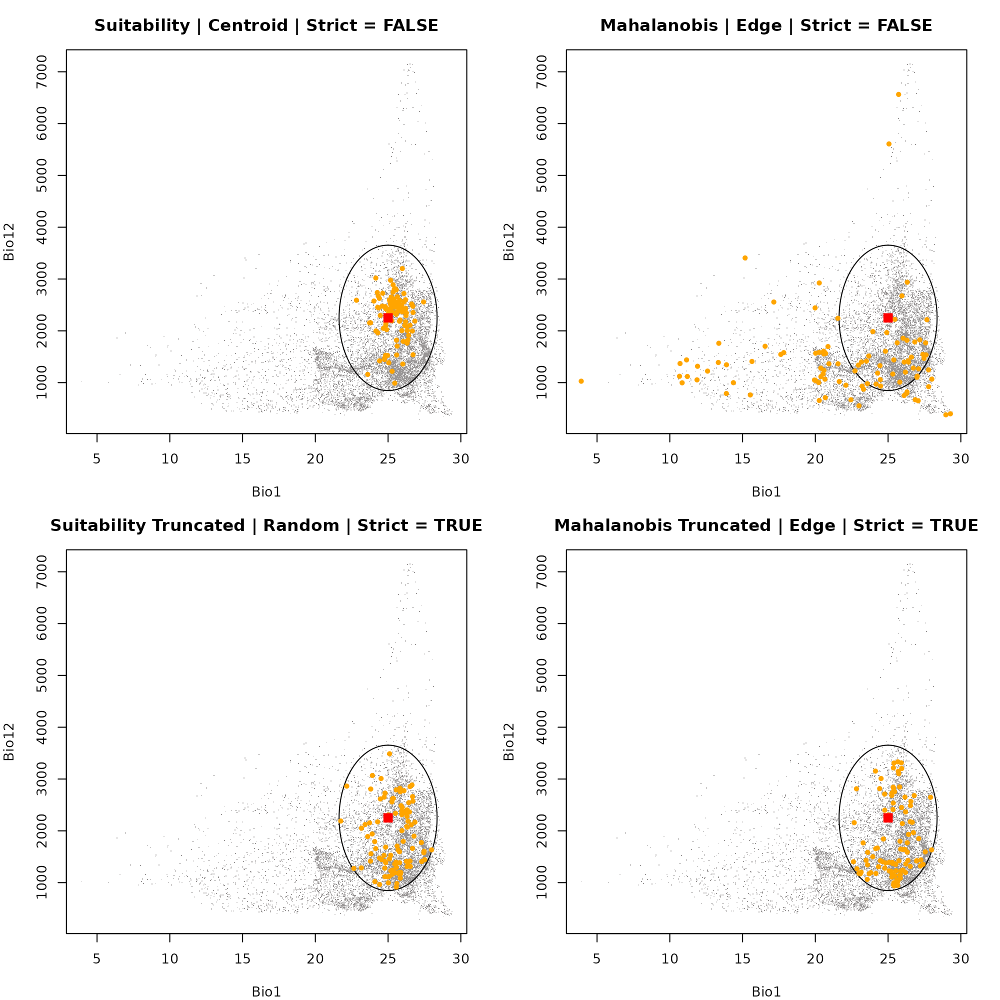
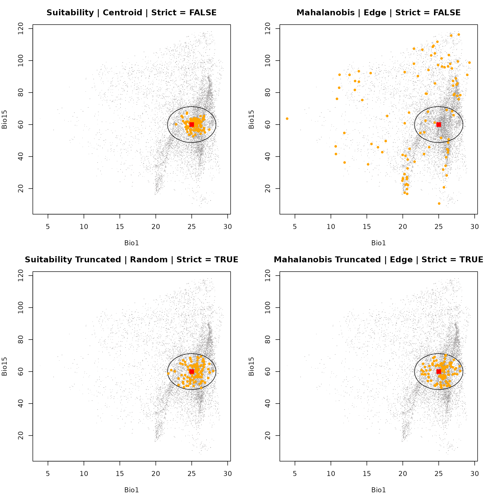
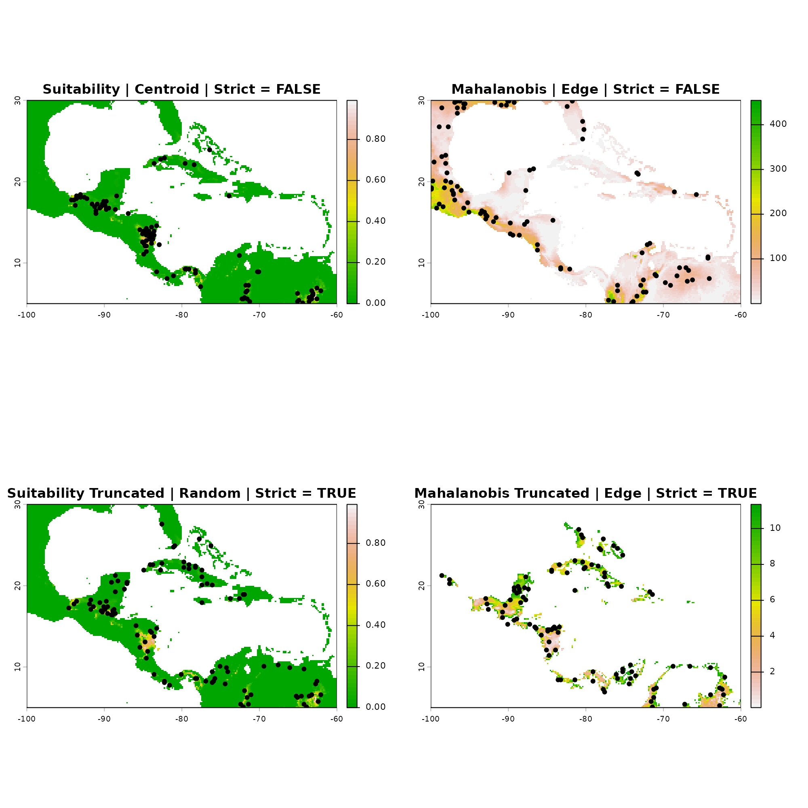

Sampling occurrence data
Source:vignettes/sampling_occurrence_data.Rmd
sampling_occurrence_data.RmdDescription
The nicheR package provides a flexible suite of sampling
functions for drawing occurrence points from raster layers, data frames,
or virtual species objects.
This vignette covers the first three steps of the core workflow:
Defining the fundamental niche space in environmental dimensions (
build_ellipsoid()).Projecting the niche to geographic space to generate a prediction surface (
predict()).Sampling standard occurrence points and comparing their distributions in both environmental space (e-space) and geographic space (g-space) (
sample_data()).
Getting ready
First, we need to load the core packages required for our spatial and niche operations.
Defining the Niche Space
The first step in simulating or modeling species distributions is defining the environmental conditions the species can tolerate (its fundamental niche). We do this by defining ranges for environmental variables and building a niche ellipsoid.
Key Arguments
-
range: A data frame where each column represents an environmental variable, and the rows contain the minimum and maximum tolerable values for the species.
# Load environmental covariates (Bio1, Bio12, Bio15)
bios_file <- system.file("extdata", "ma_bios.tif", package = "nicheR")
bios <- rast(bios_file)
vars <- c("bio_1", "bio_12", "bio_15")
# Define environmental ranges (Min and Max)
range_df <- data.frame(bio_1 = c(22, 28),
bio_12 = c(1000, 3500),
bio_15 = c(50, 70))
# Build ellipsoid niche model
ell <- build_ellipsoid(range = range_df)
#> Starting: building ellipsoidal niche from ranges...
#> Step: computing covariance matrix...
#> Step: computing additional ellipsoidal niche metrics...
#> Done: created ellipsoidal niche.Generating the Prediction Surface
Once the niche space is defined, we project it onto a geographic
landscape (a SpatRaster of environmental variables). This
yields spatial predictions of habitat suitability and environmental
distance (Mahalanobis distance).
Key Arguments
object: The ellipsoid object created in the previous step.newdata: A spatial raster (SpatRaster) containing the environmental layers for the geographic region.include_mahalanobis: Logical. IfTRUE, calculates the Mahalanobis distance from the niche centroid for each pixel.include_suitability: Logical. IfTRUE, converts the distances into a continuous habitat suitability index (0 to 1).suitability_truncated/mahalanobis_truncated: Logical. IfTRUE, truncates the metrics so that areas strictly outside the defined ellipsoid limits are assigned a suitability of 0 (or maximum distance for Mahalanobis).
# Predict spatial surfaces based on the defined ellipsoid
pred <- predict(ell,
newdata = bios,
include_mahalanobis = TRUE,
include_suitability = TRUE,
suitability_truncated = TRUE,
mahalanobis_truncated = TRUE,
keep_data = TRUE)
#> Starting: suitability prediction using newdata of class: SpatRaster...
#> Step: Ignoring extra predictor columns: bio_5, bio_6, bio_7, bio_13, bio_14
#> Step: Using 3 predictor variables: bio_1, bio_12, bio_15
#> Done: Prediction completed successfully. Returned raster layers: bio_1, bio_12, bio_15, Mahalanobis, suitability, Mahalanobis_trunc, suitability_trunc
# Visualize the resulting continuous prediction layers
plot(pred)
Standard Occurrence Sampling
Objective: To generate presence points from a continuous prediction surface (e.g., habitat suitability or Mahalanobis distance) using weighted random sampling.
Key Arguments
n_occ: The total number of occurrence points to sample.prediction: The multi-layerSpatRastergenerated bypredict().prediction_layer: The specific layer name within the raster to use as the base for our sampling weights (e.g.,"suitability","Mahalanobis_trunc").-
sampling: Determines the spatial bias of the sampling probability:"centroid": Samples more frequently from optimal conditions."edge": Samples more frequently from marginal conditions."random": Samples uniformly based strictly on the available space.
-
method: Two weighting methods control the probability used to draw samples:"suitability"— weights by suitability score."mahalanobis"— weights by Mahalanobis distance from the centroid.
strict: Logical. IfTRUE, the algorithm strictly forbids sampling in pixels outside the fundamental niche boundaries.
Generating the Samples
Below, we generate four separate occurrence datasets reflecting different theoretical sampling scenarios. We also extract the environmental data for these points so we can plot them in e-space later.
# Scenario A: Centroid Sampling from Suitability
# Generates points strongly biased toward the absolute best habitat.
# Suitability | Centroid | Strict = FALSE
occ_suit_cent <- sample_data(
n_occ = 100,
prediction = pred,
prediction_layer = "suitability",
sampling = "centroid",
method = "suitability",
seed = 123,
strict = FALSE
)
#> Starting: sample_data()
#> Done: sampled 100 points.
# Scenario B: Edge Sampling from Mahalanobis Distance
# Simulates a species frequently found in its marginal/edge environments.
# Mahalanobis | Edge | Strict = FALSE
occ_maha_edge <- sample_data(
n_occ = 100,
prediction = pred,
prediction_layer = "Mahalanobis",
sampling = "edge",
method = "mahalanobis",
seed = 123,
strict = FALSE
)
#> Starting: sample_data()
#>
#> Done: sampled 100 points.
# Scenario C: Random Sampling from Truncated Suitability
# A proportional sample where points are restricted strictly to suitable areas.
# Suitability Truncated | Random | Strict = TRUE
occ_suit_trunc_rand <- sample_data(
n_occ = 100,
prediction = pred,
prediction_layer = "suitability_trunc",
sampling = "random",
method = "suitability",
seed = 123,
strict = TRUE
)
#> Starting: sample_data()
#>
#> Done: sampled 100 points.
# Scenario D: Edge Sampling from Truncated Mahalanobis Distance
# Marginal sampling, but strictly forbidden from crossing the hard threshold.
# Mahalanobis Truncated | Edge | Strict = TRUE
occ_maha_trunc_edge <- sample_data(
n_occ = 100,
prediction = pred,
prediction_layer = "Mahalanobis_trunc",
sampling = "edge",
method = "mahalanobis",
seed = 123,
strict = TRUE
)
#> Starting: sample_data()
#>
#> Done: sampled 100 points.Visualizing in E-Space
E-Space represents the n-dimensional
coordinate system defined by your environmental variables. By plotting
our sampled points over the build_ellipsoid() object, we
can see exactly where our sampled occurrences fall relative to the
species’ fundamental niche tolerances.
Notice how "centroid" sampling clusters points near the
red square (the optimal niche center), while "edge"
sampling pushes points outward toward the borders of the ellipsoid.
Dimension 1: Bio1 vs. Bio12
First, we will look at how the samples are distributed along the axes of Annual Mean Temperature (Bio1) and Annual Precipitation (Bio12).
par(mfrow = c(2, 2), mar = c(4, 4, 3, 2))
# Plot 1: Suitability | Centroid
plot_ellipsoid(ell, background = as.data.frame(bios[[vars]]), dim = c(1, 2), pch = ".", col_bg = "#9a9797",
xlab = "Bio1", ylab = "Bio12", main = "Suitability | Centroid | Strict = FALSE")
add_data(occ_suit_cent, x = "bio_1", y = "bio_12", pts_col = "orange", pch = 20)
add_data(as.data.frame(t(ell$centroid)), x = "bio_1", y = "bio_12", pts_col = "red", pch = 15, cex = 1.5)
# Plot 2: Mahalanobis | Edge
plot_ellipsoid(ell, background = as.data.frame(bios[[vars]]), dim = c(1, 2), pch = ".", col_bg = "#9a9797",
xlab = "Bio1", ylab = "Bio12", main = "Mahalanobis | Edge | Strict = FALSE")
add_data(occ_maha_edge, x = "bio_1", y = "bio_12", pts_col = "orange", pch = 20)
add_data(as.data.frame(t(ell$centroid)), x = "bio_1", y = "bio_12", pts_col = "red", pch = 15, cex = 1.5)
# Plot 3: Suitability Truncated | Random
plot_ellipsoid(ell, background = as.data.frame(bios[[vars]]), dim = c(1, 2), pch = ".", col_bg = "#9a9797",
xlab = "Bio1", ylab = "Bio12", main = "Suitability Truncated | Random | Strict = TRUE")
add_data(occ_suit_trunc_rand, x = "bio_1", y = "bio_12", pts_col = "orange", pch = 20)
add_data(as.data.frame(t(ell$centroid)), x = "bio_1", y = "bio_12", pts_col = "red", pch = 15, cex = 1.5)
# Plot 4: Mahalanobis Truncated | Edge
plot_ellipsoid(ell, background = as.data.frame(bios[[vars]]), dim = c(1, 2), pch = ".", col_bg = "#9a9797",
xlab = "Bio1", ylab = "Bio12", main = "Mahalanobis Truncated | Edge | Strict = TRUE")
add_data(occ_maha_trunc_edge, x = "bio_1", y = "bio_12", pts_col = "orange", pch = 20)
add_data(as.data.frame(t(ell$centroid)), x = "bio_1", y = "bio_12", pts_col = "red", pch = 15, cex = 1.5)
dev.off()
#> null device
#> 1Dimension 2: Bio1 vs. Bio115
Next, we swap out our Y-axis to visualize the exact same points, but now looking at their distribution relative to Precipitation Seasonality (Bio15).
par(mfrow = c(2, 2), mar = c(4, 4, 3, 2))
# Plot 1: Suitability | Centroid
plot_ellipsoid(ell, background = as.data.frame(bios[[vars]]), dim = c(1, 3), pch = ".", col_bg = "#9a9797",
xlab = "Bio1", ylab = "Bio15", main = "Suitability | Centroid | Strict = FALSE")
add_data(occ_suit_cent, x = "bio_1", y = "bio_15", pts_col = "orange", pch = 20)
add_data(as.data.frame(t(ell$centroid)), x = "bio_1", y = "bio_15", pts_col = "red", pch = 15, cex = 1.5)
# Plot 2: Mahalanobis | Edge
plot_ellipsoid(ell, background = as.data.frame(bios[[vars]]), dim = c(1, 3), pch = ".", col_bg = "#9a9797",
xlab = "Bio1", ylab = "Bio15", main = "Mahalanobis | Edge | Strict = FALSE")
add_data(occ_maha_edge, x = "bio_1", y = "bio_15", pts_col = "orange", pch = 20)
add_data(as.data.frame(t(ell$centroid)), x = "bio_1", y = "bio_15", pts_col = "red", pch = 15, cex = 1.5)
# Plot 3: Suitability Truncated | Random
plot_ellipsoid(ell, background = as.data.frame(bios[[vars]]), dim = c(1, 3), pch = ".", col_bg = "#9a9797",
xlab = "Bio1", ylab = "Bio15", main = "Suitability Truncated | Random | Strict = TRUE")
add_data(occ_suit_trunc_rand, x = "bio_1", y = "bio_15", pts_col = "orange", pch = 20)
add_data(as.data.frame(t(ell$centroid)), x = "bio_1", y = "bio_15", pts_col = "red", pch = 15, cex = 1.5)
# Plot 4: Mahalanobis Truncated | Edge
plot_ellipsoid(ell, background = as.data.frame(bios[[vars]]), dim = c(1, 3), pch = ".", col_bg = "#9a9797",
xlab = "Bio1", ylab = "Bio15", main = "Mahalanobis Truncated | Edge | Strict = TRUE")
add_data(occ_maha_trunc_edge, x = "bio_1", y = "bio_15", pts_col = "orange", pch = 20)
add_data(as.data.frame(t(ell$centroid)), x = "bio_1", y = "bio_15", pts_col = "red", pch = 15, cex = 1.5)
dev.off()
#> null device
#> 1Visualizing in G-Space
G-Space represents the physical, real-world landscape defined by spatial coordinates (Longitude vs. Latitude). Here, we plot the exact same four datasets on top of their respective prediction maps.
This duality reveals how clustering in the center of E-Space translates to points occurring in the highest suitability geographic patches, whereas E-Space edge sampling translates to points scattered in peripheral, marginal habitats on the map.
par(mfrow = c(2, 2), mar = c(4, 4, 3, 2))
# Plot 1: Suitability | Centroid | Strict = FALSE
plot(pred[["suitability"]], main = "Suitability | Centroid | Strict = FALSE", col = grDevices::terrain.colors(50))
points(occ_suit_cent[, c(1:2)], pch = 20, col = "black", cex = 1.2)
# Plot 2: Mahalanobis | Edge | Strict = FALSE
plot(pred[["Mahalanobis"]], main = "Mahalanobis | Edge | Strict = FALSE", col = rev(grDevices::terrain.colors(50)))
points(occ_maha_edge[, c(1:2)], pch = 20, col = "black", cex = 1.2)
# Plot 3: Truncated Suitability | Random | Strict = TRUE
plot(pred[["suitability_trunc"]], main = "Suitability Truncated | Random | Strict = TRUE", col = grDevices::terrain.colors(50))
points(occ_suit_trunc_rand[, c(1:2)], pch = 20, col = "black", cex = 1.2)
# Plot 4: Truncated Mahalanobis | Edge | Strict = TRUE
plot(pred[["Mahalanobis_trunc"]], main = "Mahalanobis Truncated | Edge | Strict = TRUE", col = rev(grDevices::terrain.colors(50)))
points(occ_maha_trunc_edge[, c(1:2)], pch = 20, col = "black", cex = 1.2)
dev.off()
#> null device
#> 1